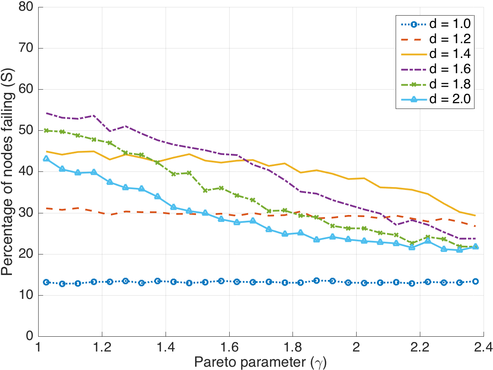
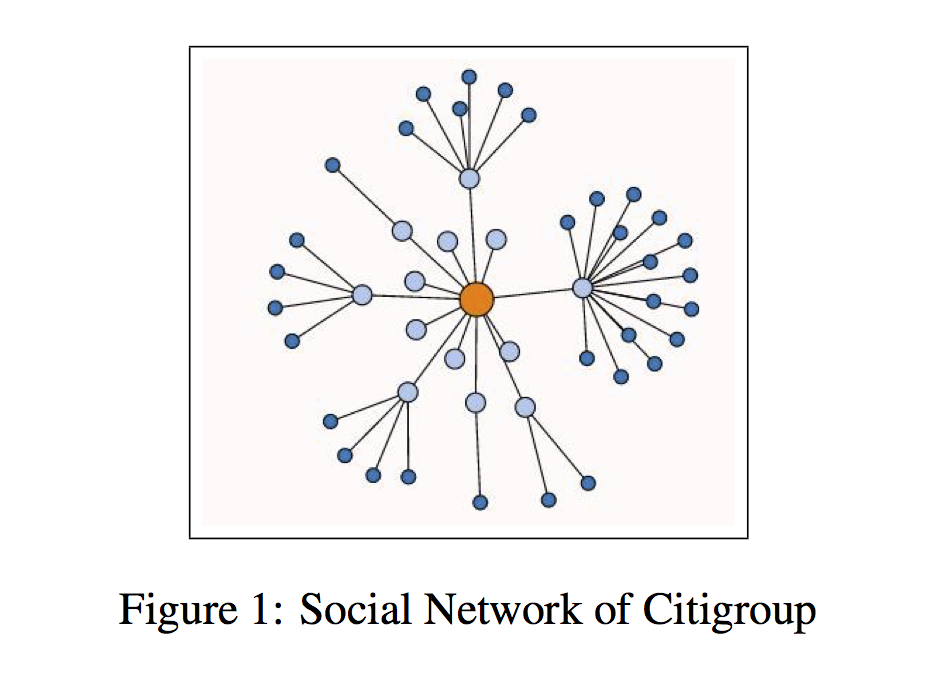
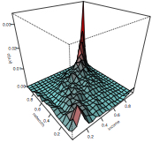
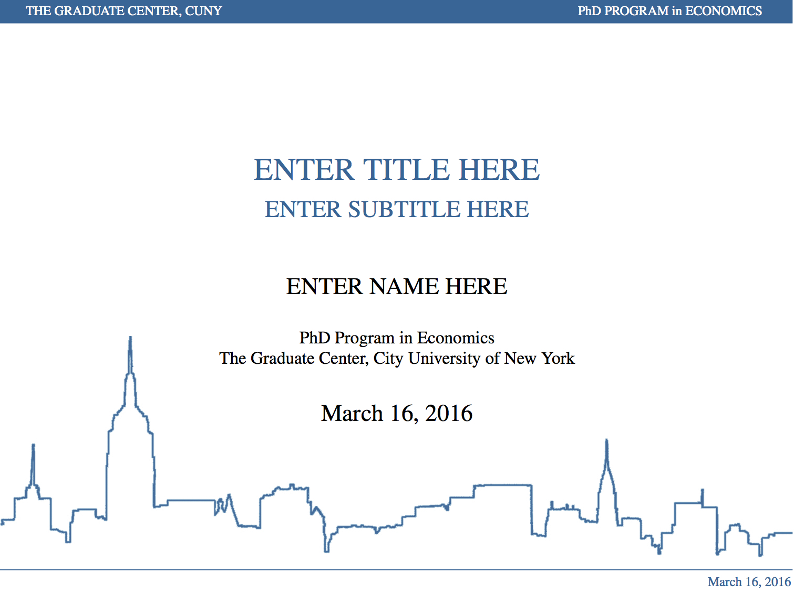

Aggregate Wealth and Its Distribution as Determinants of Financial Crises
Journal of Economic Inequality , Submitted for Initial Review.
Abstract: This paper investigates the relationship between wealth inequality and financial crises. While substantiation of a role for income inequality is ambiguous in the literature, evidence is presented suggesting a unique capacity for the accumulation of assets to increase the likelihood of a financial crisis episode. Testing long-run panel data for nine countries with a reduced form, two-way fixed effects model, estimates suggest that increasing wealth inequality, in an economy with high levels of aggregate wealth as measured by the wealth-income ratio, has a significantly positive and increasing marginal effect on the likelihood of financial crises, particularly stock market crashes. Predicted probabilities closely track the incidence of financial crises in the United States and United Kingdom over the past century. It is argued that such results reveal an important role for the distribution of accumulated assets in the macro-financial stability of rich countries. The distribution of stocks may capture structural vulnerabilities that the distribution of flows cannot expose, and hence more unequal countries in wealth face greater financial instability. An economic network hypothesis is proposed for interpreting these results.
.pdf OSMA Network Model of Wealth Inequality and Financial Instability [Job market paper]
Abstract: We propose a theoretical network model for understanding the relationship between wealth inequality and financial instability. Financial assets link individuals to form a network. Its topology varies with the level of wealth inequality or total wealth and determines network stability in the event of a negative income shock. Simulations demonstrate that increasing wealth inequality, measured by the skewness of the financial network’s degree distribution, makes a wealthy network less stable, measured by the share of individuals failing financially. Aggregate wealth also has an inverted U-shaped effect on the model’s network stability. Implications of the theoretical model are tested empirically on long-run panel data for nine countries with a reduced form, two-way fixed effects model. Estimates suggest that increasing wealth inequality, in an economy with high levels of aggregate wealth as measured by the wealth-income ratio, significantly increases the likelihood of financial crises, particularly stock market crashes. We find little evidence of an inverted U relationship between aggregate wealth and instability. These results suggest an important role for the distribution of accumulated assets in macro-financial stability.
.pdf

Wealth Inequality, Network Topology and Financial Crisis
Working Paper: February 2017
Abstract: A theoretical financial network model is proposed for understanding the relationship between wealth inequality and financial crises, or instability. Financial assets link individual asset and liability holders to form a static economic network. The total number of financial assets an individual owns represents their in-degree and the distribution of those assets is imposed by an in-degree distribution---equivalent to the wealth distribution. A network's topology varies with the level of wealth inequality and total wealth, and together they determine network contagion in the event of a random negative income shock to an individual. Simulations demonstrate that increasing wealth inequality, imposed exogenously through the degree distribution's skewness parameter, makes a wealthy network less stable---as measured by the share of individuals failing financially. Aggregate wealth also has an inverted U-shaped effect on the model's network stability. The simulation results suggest a unique structural role for the distribution of accumulated assets in macro-financial stability.
.pdf

Application of Social Network Analysis in the Estimation of Bank Financial Strength During the Financial Crisis.
with Michelle Morales, David Guy Brizan, Hussein Ghaly, Min Ma, Syed Reza, and Andrew Rosenberg in NLP Unshared Task in PoliInformatics, 2014.
Abstract: The Financial Crisis of 2007--2008 was a very complex and impactful global event. The goal of this research is to explore the possibility of using a bank’s social relations to estimate a bank’s financial strength. We apply Natural Language Processing techniques to a corpus of financial data released by the NLP Unshared Task in PoliInformatics in 2014 in order to explore and better understand this possibility. Our work begins with the extraction of named entities from the corpus to establish names of people involved in the crisis. We then aggregate the social histories of these individuals from an online collaborative knowledge base: Freebase. Accordingly, we use the social histories of entities to establish social connections between them. We end with a visualization of the connections we found: a presentation of a social financial crisis network.
.pdf

Income and Wealth Distributions: An Application of Copulas
with Hui Liu
Working Paper: May 2014
.pdfWorks in Progress
Inequality as a Cause of Endogenous Imperialism and Militarization: 1870--1913 with Branko Milanovic (CUNY Graduate Center) and Suresh Naidu (Columbia)
Is Inequality Innovation Motivation? with Russell Funk (Minnesota)
Policing Tactics and Income Inequality: Another Perspective on NYPD Stop & Frisk.

Other Publications
Svejk vs. Cimrman: A Comparison in Satire. KOSMAS Czechoslovak and Central European Journal, Vol. 21(3) (2007), 84-89.
.pdf